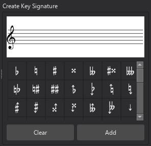

Key signatures
Overview
Key signatures are applied from the Key signatures palette.
When creating a new score, the initial key signature can be set on the second page of the New Score dialog. The default is C major/A minor, which will be used if you skip this page.
Adding a key signature
To add a key signature, or replace an existing one:
- Select a measure, note or rest, or key signature in the score
- Click a key signature in the Key signatures palette.
Alternatively, drag a key signature directly from the palette onto the measure where you want it to appear.
Currently, key signature changes can only occur at the beginning of a measure (except for local key signatures).
Though they most commonly appear at the start of a measure, key signature changes can occur on any note or rest within a measure.
Note: It is also possible, though uncommon, to add a key-signature mid measure by selecting a note then clicking a palette key signature, or dragging the key signature to a note.
Deleting a key signature
To delete a key signature, select it and press Del.
You cannot delete the key signature at the very beginning of a score, and MuseScore Studio will give an error if you try. This is because it is impossible to know whether you want a C major/A minor key signature, or an 'open/atonal' one. Instead, add the key signature you want to the first bar from the palette.
Controlling key signature visibility
To toggle whether key signatures should be shown on a particular staff (throughout the score):
- Right-click the staff and choose Staff/Part properties... from the context menu
- Click the Advanced style properties... button
- Check/uncheck the Show key signature box.
Note that the music is still notated as though the key signatures are in effect, even though they are not drawn. To remove a key signature from a particular staff and notate the pitches with accidentals instead, apply a local key signature of the open/atonal type to that staff instead.
Usually, key signatures are repeated at the start of each system after the point where they first appear. To change this:
- Open the Style dialog (Format -> Style)
- Select Clefs, key & time signatures from the list on the left
- Under Key signatures, select an option for Visibility: * Show on every system is the default behaviour * Hide after the first system where they appear will suppress the automatic restatement of key signatures on subsequent systems.
To hide a specific key signature on all staves:
- Select the key signature
- In the Properties panel, under General, uncheck the Visible toggle (or simply press V).
Note that the key signature will still appear on subsequent systems, unless you disable this behaviour (see above).
For controlling visibility of courtesy key signatures, see Courtesy key signatures, below.
Adding a local key signature
Sometimes you may need a different key signature to the global one on certain staves. We refer to this as a 'local' key signature.
Unlike global key signatures, local key signatures can be applied to any note or rest within the measure, not just to the beginning.
To add a local key signature, add it (either by dragging from the palette to the required place, or selecting the measure, or a note or rest within it, and clicking a key signature in the palette) while holding Ctrl (Mac: Cmd).
Deleting a key signature on a single staff
If you have a global key signature but do not want the change to apply to a specific staff, you can delete it on that staff only:
- Hold Ctrl (Mac: Cmd) and click the key signature on the desired staff
- Press Del.
Courtesy key signatures
Normally, when a key signature change falls at the start of a system, a courtesy (also called cautionary) is shown at the end of the previous system.
To disable or re-enable all courtesy key signatures throughout the score:
- Open the Style dialog (Format -> Style)
- Select Clefs, key & time signatures from the list on the left
- Under Key signatures, check/uncheck the Show courtesy key signatures box.
To hide or show an individual courtesy key signature:
- Select the parent key signature (i.e. not the courtesy itself)
- In the Properties panel, under Key signature, check/uncheck the Show courtesy key signature on previous system box.
To control what happens around repeats and jumps, see Changes and courtesies at repeats and jumps.
Key signatures and transposing instruments
When working with a transposed score or part (i.e. with Concert pitch turned off), care must be taken when applying key signatures. All key signatures are 'sounding pitch', so, for example, if you wish to achieve a 'written' D major key signature in a B flat clarinet part, you need to apply a C major key signature (since the clarinet is written a tone higher than it sounds).
Open/atonal key signature
Some instruments (e.g. French horn, timpani) are conventionally written with no key signatures. To achieve this, add an open/atonal local key signature to the staff. This is already done in scores created from templates.
An open/atonal key signature looks like a C major/A minor one, but unlike all the other key signatures it is unaffected by transposition.
Creating a custom key signature
If you need a key signature that is not available in the palette, you can create your own using the Create Key Signature dialog. You can access this dialog from the Key signatures palette:
- In the Key signatures palette, click More
- Click the Create key signature button in the popup
Or, from the Master Palette:
- Select View -> Master palette from the menu bar, or press Shift+F9
- Choose Key signatures from the list in the left of the dialog.

To create your key signature in this dialog, simply drag accidentals from the bottom of the dialog onto the staff above as required. Note:
- To adjust the vertical position of an accidental on the staff, simply drag it up or down
- The accidentals are automatically spaced from left to right in the order you add them. If you want to move them horizontally, hold Ctrl (Mac: Cmd) and drag them left or right
- To remove an accidental, select it and press Del
- To remove all accidentals, click the Clear button.
To add the new time signature to the Key signatures palette, click the Add button. You can now add it to the score from the palette in the usual way.
Key signature mode
You can set the mode of a key signature (major, minor, Dorian, etc) if required:
- Select a key signature
- In the Properties panel, under Key signature, select an option from the Mode dropdown.
MuseScore Studio does not currently do anything with this information, and the default setting is Unknown. However, it is included when exporting to MusicXML, where it may be relevant.
Key signature style
There are some more global style settings for key signatures available in the style dialog (Format -> Style):
- In Measures, under Padding, some settings to configure the distances between key signatures and other items:
- Clef to key signature
- Key signature to time signature
- Barline to key signature
- Key signature to barline
- In Accidentals:
- Naturals in key signatures lets you specify when cancelling naturals should be shown in key signature changes
- In Measures, under System header, one more distance setting:
- Clef/key signature to first note (this only applies at the beginning of a system)
- In Barlines, Use double barlines before key signatures has three options:
- Always: always use a double barline
- Never: always use a single barline
- Only before courtesy key signatures: use a double barline before courtesies, but a single barline otherwise